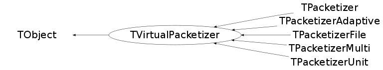

class TVirtualPacketizer: public TObject
TVirtualPacketizer The packetizer is a load balancing object created for each query. It generates packets to be processed on PROOF worker servers. A packet is an event range (begin entry and number of entries) or object range (first object and number of objects) in a TTree (entries) or a directory (objects) in a file. Packets are generated taking into account the performance of the remote machine, the time it took to process a previous packet on the remote machine, the locality of the database files, etc. TVirtualPacketizer includes common parts of PROOF packetizers. Look in subclasses for details. The default packetizer is TPacketizerAdaptive. To use an alternative one, for instance - the TPacketizer, call: proof->SetParameter("PROOF_Packetizer", "TPacketizer");
Function Members (Methods)
public:
protected:
| TVirtualPacketizer(const TVirtualPacketizer&) | |
| TVirtualPacketizer(TList* input, TProofProgressStatus* st = 0) | |
| TDSetElement* | CreateNewPacket(TDSetElement* base, Long64_t first, Long64_t num) |
| virtual void | TObject::DoError(int level, const char* location, const char* fmt, va_list va) const |
| Long64_t | GetEntries(Bool_t tree, TDSetElement* e) |
| virtual Bool_t | HandleTimer(TTimer* timer) |
| void | TObject::MakeZombie() |
| void | operator=(const TVirtualPacketizer&) |
Data Members
public:
| enum EUseEstOpt { | kEstOff | |
| kEstCurrent | ||
| kEstAverage | ||
| }; | ||
| enum EStatusBits { | kIsInitializing | |
| kIsDone | ||
| kIsTree | ||
| }; | ||
| enum TObject::EStatusBits { | kCanDelete | |
| kMustCleanup | ||
| kObjInCanvas | ||
| kIsReferenced | ||
| kHasUUID | ||
| kCannotPick | ||
| kNoContextMenu | ||
| kInvalidObject | ||
| }; | ||
| enum TObject::[unnamed] { | kIsOnHeap | |
| kNotDeleted | ||
| kZombie | ||
| kBitMask | ||
| kSingleKey | ||
| kOverwrite | ||
| kWriteDelete | ||
| }; |
protected:
| Bool_t | fAWLastFill | Whether to fill the last measurement |
| Int_t | fActWrksLast | Active workers at fProcTimeLast |
| Long_t | fCircN | Circularity |
| TNtupleD* | fCircProg | Keeps circular info for "instantenous" |
| TList* | fConfigParams | List of configuration parameters |
| TString | fDataSet | Name of the dataset being processed (for dataset-driven runs) |
| Float_t | fEffSessLast | Number of effective sessions at fProcTimeLast |
| Float_t | fEvtRateLast | Evt rate at fProcTimeLast |
| TList* | fFailedPackets | a list of packets that failed while processing |
| Float_t | fInitTime | time before processing |
| Float_t | fMBsReadLast | MBs read at fProcTimeLast |
| Double_t | fMaxPacketTime | maximum packet time |
| Double_t | fMinPacketTime | minimum packet time |
| Float_t | fProcTime | time since start of processing |
| Float_t | fProcTimeLast | Time of the last measurement |
| TTimer* | fProgress | progress updates timer |
| TNtuple* | fProgressPerf | {Active workers, evt rate, MBs read} as a function of processing time |
| TProofProgressStatus* | fProgressStatus | pointer to status in the player. |
| Float_t | fReportPeriod | Time between reports if nothing changes (estimated proc time / 100) |
| TMap* | fSlaveStats | slave status, keyed by correspondig TSlave |
| TTime | fStartTime | time offset |
| Bool_t | fStop | Termination of Process() requested? |
| Float_t | fTimeUpdt | time between updates |
| Long64_t | fTotalEntries | total number of entries to be distributed; |
| TVirtualPacketizer::EUseEstOpt | fUseEstOpt | Control usage of estimated values for the progress info |
| Bool_t | fValid | Constructed properly? |
Class Charts
{kind=link}
{kind=link}
{kind=link}
{kind=link}

Function documentation
TDSetElement* CreateNewPacket(TDSetElement* base, Long64_t first, Long64_t num)
Creates a new TDSetElement from from base packet starting from the first entry with num entries. The function returns a new created objects which have to be deleted.
TVirtualPacketizer(TList* input, TProofProgressStatus* st = 0)
void operator=(const TVirtualPacketizer& )
Long64_t GetEntriesProcessed() const
{ return (fProgressStatus? fProgressStatus->GetEntries() : 0); }Int_t GetEstEntriesProcessed(Float_t , Long64_t& ent, Long64_t& bytes, Long64_t& calls)
{ ent = GetEntriesProcessed(); bytes = GetBytesRead(); calls = GetReadCalls(); return 0; }Float_t GetCurrentRate(Bool_t& all)
{ all = kTRUE; return (fProgressStatus? fProgressStatus->GetCurrentRate() : 0.); }TNtuple * GetProgressPerf(Bool_t steal = kFALSE)
TList * GetConfigParams(Bool_t steal = kFALSE)
Int_t AddProcessed(TSlave* , TProofProgressStatus* , Double_t , TList** )
{ return fProgressStatus; }